Logistic Regression
Introduction
In the previous Chapter we encountered linear regression analysis which allowed us to quantify the amount and direction of one or more independent variables on a continuous dependent variable. I already mentioned there, that there is also a type of a regression which can deal with a binary dependent variable. This is usually a yes/no scenario, such as democracy / autocracy, war / peace, trade agreement / no trade agreement, … You get the picture. Many problems or questions in political science have binary outcomes, and so you are about to learn a very important and useful method to answer research questions. As in the previous Chapter, I will take you some through some theory first, and then we are applying the theory to an empirical example. This time concerning the survival of passengers on the Titanic.
Logit - The Intuition
COVID-19 has put a bit of a damper on this, but a question we can all relate to is whether to go out tonight, or not. The “propensity to go out” is not directly observable, and so we call this a latent variable. You can imagine this running from minus infinity to plus infinity, and at some point on this continuum you are making the decision to go out. Let’s call this point tau (\(\tau\)). Graphically, this would look like this:
Your inclination to go out, is likely to be influenced by the amount of money you have in your wallet / bank. If you are broke, you will be less inclined (if you are sensible), and if you are swimming in it, you will be more inclined. So, if the “propensity to go out” (which remember is running from minus to plus infinity) is influenced by your budget, then let’s construct a graph, in which we pop the propensity to go out on the y-axis, and the budget on the x-axis. If we assume that this relationship is linear, we can fit a regression line into this coordinate system, just as we have in the previous Chapter:
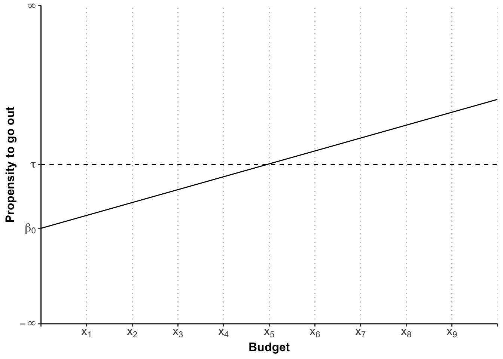
Whilst this visualises the influence of the budget on the latent variable, what we are aiming for is to make a prediction about the probability of you going out, or not.
Now imagine, your budget is \(x_{1}\). This is way below the threshold \(\tau\) and so the most likely scenario here is that you will stay home. But all of your friends are going out, the sun is shining, and you just scored a 74 in an essay. So there is some chance you will still go out. It is less likely than the budgetary constraint would suggest, but it is there. Where I am going with this is this: over every budgetary point, there is a probability distribution (for logit a bell-shaped curve not unlike the normal distribution, called a logistic distribution1). If we draw these probability distributions in, the graph looks like this:
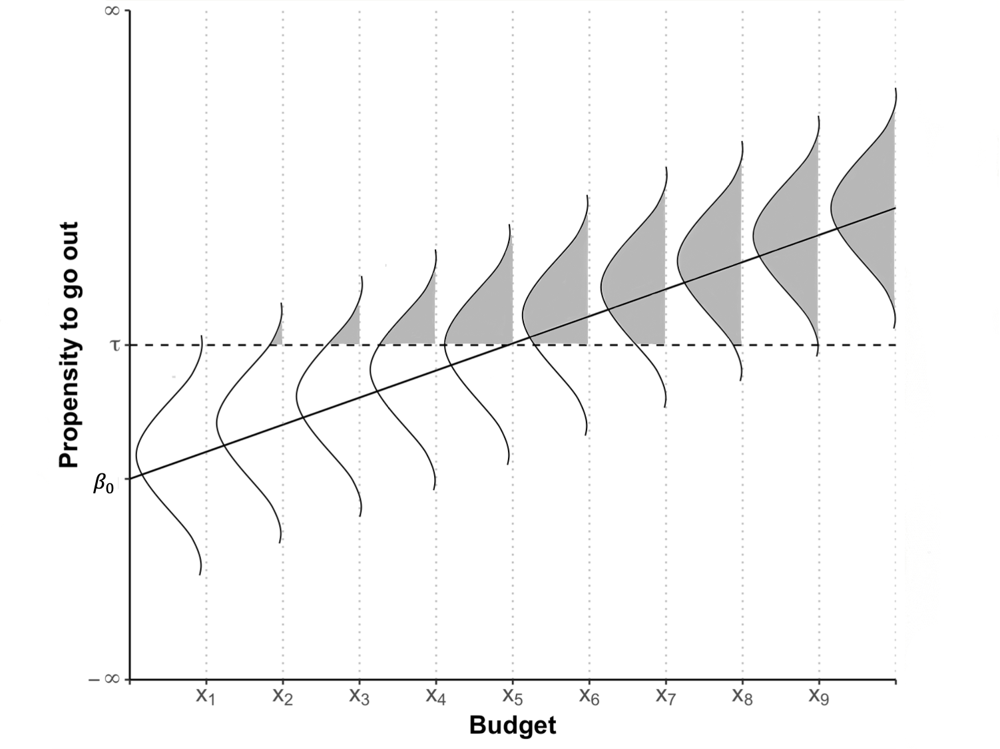
The probability of going out is coloured in in grey. You can see that even at \(x_{1}\) there is a teeny bit of probability that you will go out. As the budget increases, more and more probability slides over the threshold \(\tau\), until we reach the magical point of \(x_{5}\) where the probability is 50%. From there on, the amount of probability sliding over \(\tau\) is steadily decreasing, because of the shape of the logistic distribution.
We can depict the amount of probability (or the size of the grey area) for each \(x_{i}\) in a separate graph which is called the Cumulative Probability (Density Function), or short CDF:
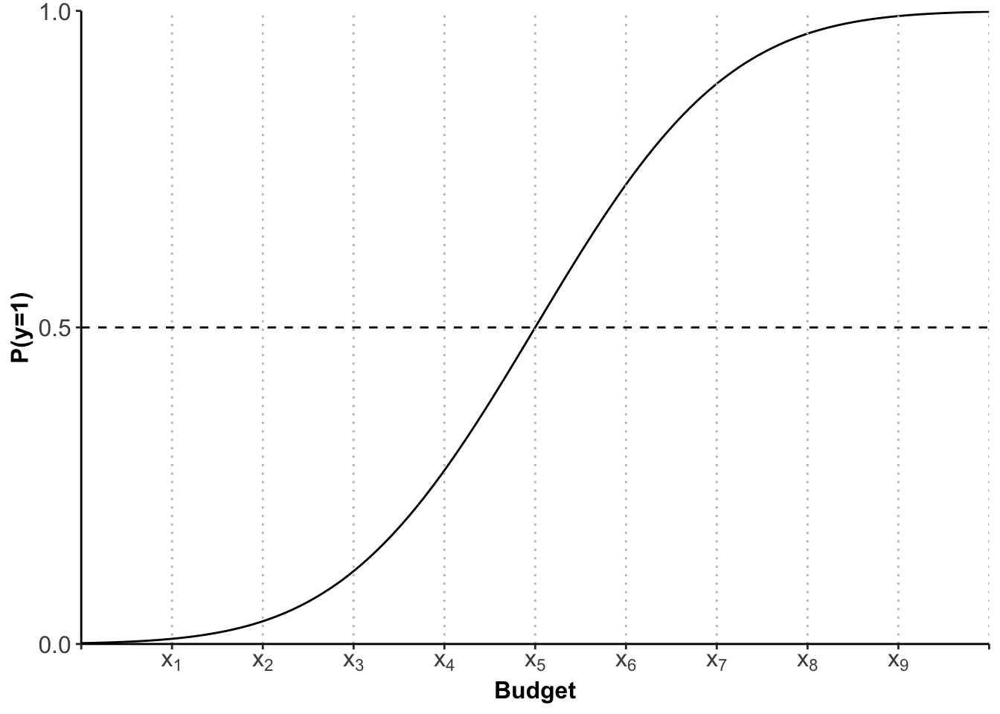
This s-shaped curve now gives us the probability (of going out) for each \(x_{i}\) (budget). It is important to note that the relationship is not linear, as in linear regression. Because we have an s-shaped curve the increase in probability when going from \(x_{2}\) to \(x_{3}\) is not the same as going from \(x_{3}\) to \(x_{4}\). You can see that visualised here:
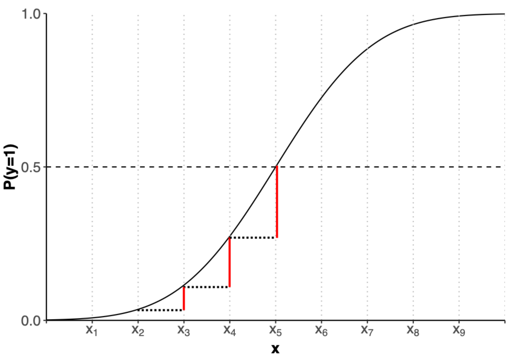
We will therefore not be able to interpret the coefficients in the same way as for OLS. We will be using predicted probabilities instead. But one step at a time. Let’s first get our hands dirty with some data.
Logit - The Estimation
We are going to use data on the passengers of the Titanic in 1912 and will investigate why or why not they survived.
Schematically, we can write the logit command as follows:
logit <- glm(depvar ~ indepvar,
data = mydata,
family = "binomial")Before we can use it, however, we need to set the working directory, load the data, and prepare our dependent variable, turning it into a factor:
library(readxl)
library(tidyverse)
titanic <- read_excel("data/titanic.xlsx", sheet="titanic_full")
titanic$survived <- factor(titanic$survived,
labels=c("no", "yes"))For our first investigation, let’s see whether a passenger’s age has influenced the probability to survive the sinking. Our hypotheses are as follows:
- \(H_{0}\): Age had no impact on the probability to survive
- \(H_{a}\): Age had an impact on the probability to survive
If we visualise the Null-Hypothesis, we would find the same probability (the average probability) of surviving for every \(x_{i}\):
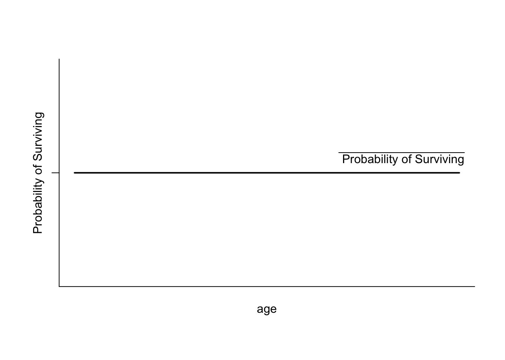
Let’s see how much evidence against this hypothesis we have by estimating the logit model:
logit <- glm(survived ~ age,
data = titanic,
na.action = na.exclude,
family = "binomial")As in OLS we can obtain the results by using the summary() function:
summary(logit)
Call:
glm(formula = survived ~ age, family = "binomial", data = titanic,
na.action = na.exclude)
Coefficients:
Estimate Std. Error z value Pr(>|z|)
(Intercept) -0.136531 0.144715 -0.943 0.3455
age -0.007899 0.004407 -1.792 0.0731 .
---
Signif. codes: 0 '***' 0.001 '**' 0.01 '*' 0.05 '.' 0.1 ' ' 1
(Dispersion parameter for binomial family taken to be 1)
Null deviance: 1414.6 on 1045 degrees of freedom
Residual deviance: 1411.4 on 1044 degrees of freedom
(263 observations deleted due to missingness)
AIC: 1415.4
Number of Fisher Scoring iterations: 4I will take you throught his output bit by bit now.
Logit - The Output
As always, R first shows you the formula for the estimated model.
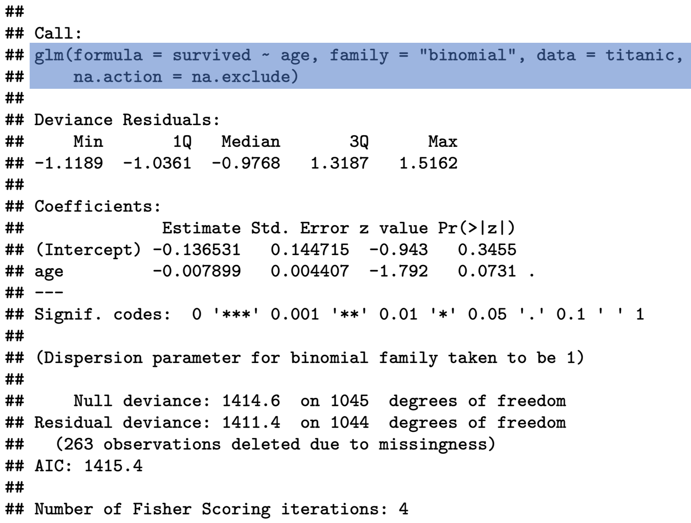
You will find the coefficients further down below – not unlike the OLS output. First we need to see whether our coefficients are statistically significant. If they are not, then the numbers have just occurred by chance, and we cannot take any message from them. We do this by looking at the p-value:
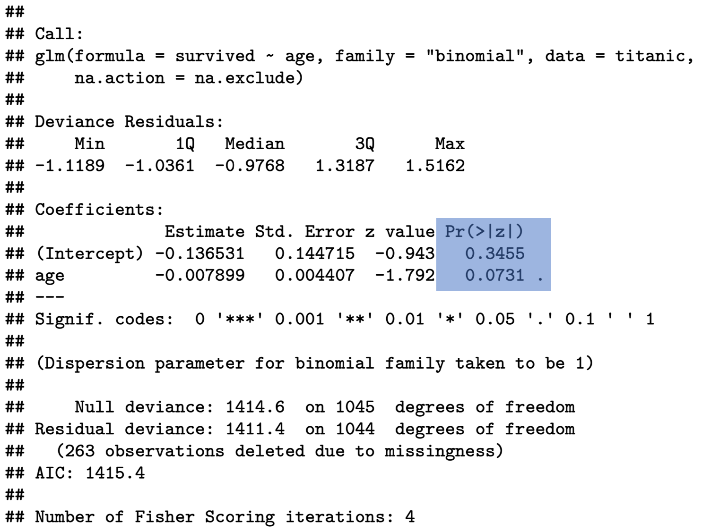
In the social sciences we generally require a 95% confidence level, or a p-value \(p\le 0.05\). Our p-value for the age coefficient is 0.0731 and is therefore larger than the required threshold. We can draw the conclusion that age had no significant impact on the probability to survive the sinking of the Titanic!
R also gives you some information on missing values in the end. It is always worthwhile looking at this, so that you are aware how many observations have actually been used for the estimation.
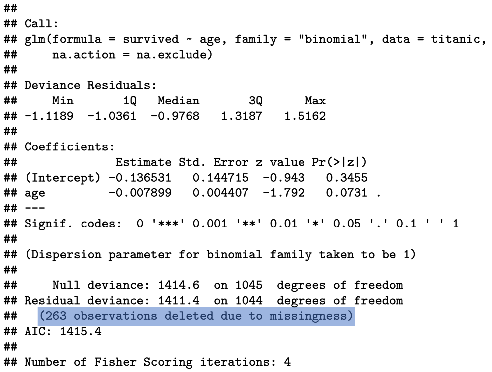
Logit - Interpreting the Coefficients
So far, I have only said that in logistic regression we cannot interpret coefficients directly, because they are not linear. This is why we have to resort to something called predicted probabilities. But what are they?
Before I can show you this, we need to estimate a new model, because we can only interpret coefficients if they are statistically significant - I know I am labouring the point, but you would be surprised how often this goes wrong in essays. Let’s look at whether age influenced the probability to travel in first-class. For this, we recode the class variable into a binary dummy and then estimate our model:
titanic <- titanic %>%
mutate(class =
as.numeric(
recode(pclass, '1'='1',
'2'='0',
'3'='0')))
class_age <- glm(class ~ age,
data = titanic,
na.action = na.exclude,
family = "binomial")
summary(class_age)
Call:
glm(formula = class ~ age, family = "binomial", data = titanic,
na.action = na.exclude)
Coefficients:
Estimate Std. Error z value Pr(>|z|)
(Intercept) -3.187456 0.213561 -14.93 <2e-16 ***
age 0.067767 0.005825 11.63 <2e-16 ***
---
Signif. codes: 0 '***' 0.001 '**' 0.01 '*' 0.05 '.' 0.1 ' ' 1
(Dispersion parameter for binomial family taken to be 1)
Null deviance: 1223.3 on 1045 degrees of freedom
Residual deviance: 1056.1 on 1044 degrees of freedom
(263 observations deleted due to missingness)
AIC: 1060.1
Number of Fisher Scoring iterations: 4As you can see our coefficients are highly significant, and we can interpret them.
As explained before, we cannot do this the same way as in OLS. At this point, what you can say from looking at this output is restricted to:
- Direction: does the independent variable have a positive or a negative influence on the dependent variable?
- Size: you can compare the size effect of different coefficients as in “this is larger than”, or “this is smaller than”. In effect, the size of coefficients determines how steep our s-shaped CDF is, and so the higher the coefficient, the steeper the curve.
If we want to delve deeper into the interpretation, we can evaluate the probability on the y-axis for different values on the x-axis – or to stay with our example, what is the probability of travelling first class at different ages?
Let us first get a basic overview of the variable . We can do this by calling
summary(titanic$age) Min. 1st Qu. Median Mean 3rd Qu. Max. NA's
0.1667 21.0000 28.0000 29.8811 39.0000 80.0000 263 - Average age: 30
- Minimum age: 0.17 (two months)
- Maximum age: 80
- 263 missing observations
As a first step, it might be interesting to see what the probability of travelling first class was at the average age. When calculating the average age, we need to exclude missing values by setting na.rm=TRUE.
meanage = data.frame(age = mean(titanic$age, na.rm=TRUE))After defining this object, we can use it to predict the probability at this point:
predict(class_age, meanage, type="response") 1
0.2382104 It is important to set the type to response here to obtain the probabilities, otherwise R will return to you the log-odds which is another way of interpreting the results of a logit. Log-odds are defined as the logarithm of probability of success over probability of failure. We are not going to look at these in this module.
At mean age, the probability to travel First Class was 24%. If we set age to its maximum
maxage = data.frame(age = max(titanic$age, na.rm=TRUE))and calculate the predicted probability again, it changes very drastically:
predict(class_age, maxage, type="response") 1
0.9032496 Now we can make statements such as:
- At average age, the probability to travel First Class on the Titanic was 24%.
- At maximum age of 80 years, this probability increases by 66% to 90%.
You might wish to get an overview of what the probabilities to travel first class were for the entire range of the age variable. You can do this, by
- finding out the range
- creating a sequence ranging from minimum to maximum value, in steps of 1 year
- predicting the probabilities by using the previously created sequence as a list
summary(titanic$age) Min. 1st Qu. Median Mean 3rd Qu. Max. NA's
0.1667 21.0000 28.0000 29.8811 39.0000 80.0000 263 xage <- seq(0, 80, 1)
yage <- predict(class_age, list(age = xage),type="response")If you are in a rush, you can simply plot this in a base R plot.
plot(xage, yage, xlab = "age", ylab = "Probability to travel in First Class", type="l")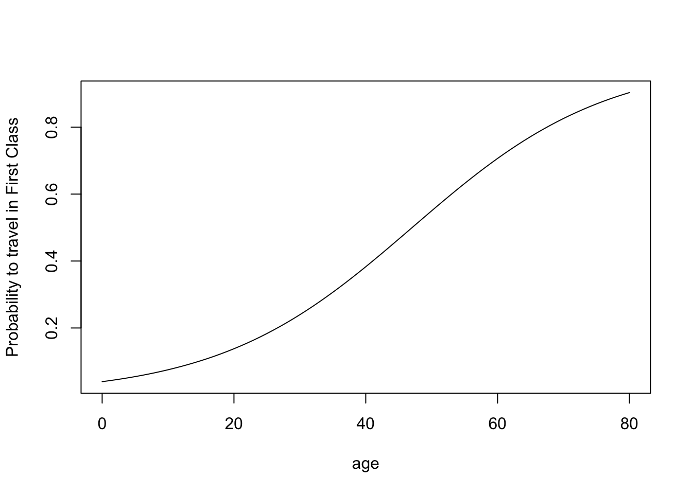
If you want this to look jazzy, use GGPLOT2 (you need to turn the sequence and the predicted probabilities into a data frame first):
predictions <- data.frame(xage,yage)
ggplot(data=predictions, aes(x=xage, y=yage)) +
geom_line() +
labs(x= "Age", y="Predicted Probability to Travel in First Class") +
theme(axis.text=element_text(size=12),
axis.title=element_text(size=12,face="bold"))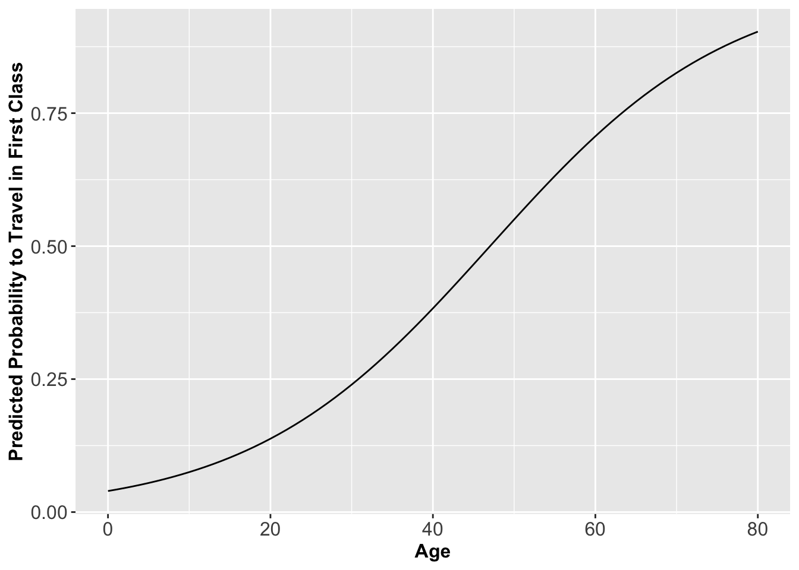
You can see from this graph that you to be just older than 47 to be likely to travel in First Class:
firstage = data.frame(age = 47)
predict(class_age, firstage, type="response") 1
0.4993925 We can also derive this in a more sophisticated way. We take the log-odd (defined as logarithm of the probability of success over probability of failure) and set it equal to our regression line2:
\[\begin{equation*} log(0.5/(1-0.5)) = -3.187456 + 0.067767 \times age \end{equation*}\]
\[\begin{equation*} log(1) = 0 = -3.187456 + 0.067767 \times age \end{equation*}\]
Rearranging, we obtain
\[\begin{equation*} age = 3.187456/0.067767 = 47.03586 \end{equation*}\]
In general, to solve for age for any value of p:
\[\begin{equation*} age = (log(p/(1-p)) - 3.187456)/0.067767 \end{equation*}\]
Or, to make it more easily reproducible:
\[\begin{equation} age = (log(p/(1-p)) - coef(class\_age)[1])/coef(class\_age)[2] \end{equation}\]
If you just want the x-value associated with 50% probability, simply divide the intercept by the slope coefficient!
Logit - Model Fit
The question is now, how good does this model predict travelling in first class? The higher the proportion of correctly predicted cases, the better. But the proportion of correctly predicted cases is very much dependent on where we set the cut-off point \(\tau\). So far, I have assumed this to be at 50%, because it is a sensible default. But we could choose different cut-off points to classify predictions. If, for example, we are incorrectly predicting 1s (here: travelled in first class) for a large range of x-values, we could just raise the cut-off point to turn those (incorrectly) predicted 1s into zeros (here: travelling in a class other than first) instead.
It is therefore fairer to use a method which captures the trade-off between correctly predicting 1s and 0s. This method is called a ROC-curve (receiver operating ciriterion) and takes the form of a curve. This curve has two axes:
- y-axis: Probability of correctly predicting a 1. (Sensitivity)
- x-axis: (1-Specificity); Specificity: Probability of correctly predicting a 0.
Usually, there is also a diagonal fitted into the coordinate system to indicate the model fit for a model without independent variables (AKA covariates).
For our passenger class model, this curve looks like this:
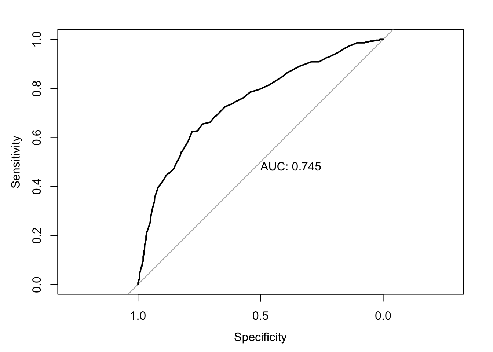
How do we interpret this? The further away from the diagonal, the better our model predicts 1s and 0s. The area called ‘auc’ would be 100% if the model correctly predicted everything. This area decreases as the model becomes worse. At 50% we might as well have tossed a coin to make predictions, because we are only correctly predicting 50% of cases. Here we predict 74.5% which isn’t great, but not a bad start. We could now estimate different models and use their area to compare fit between different models.
But let me show you how I got this curve in the first place. We start by installing the package pROC
install.packages("pROC")We can then load the package
library(pROC)and calculate the curve:
prob_trav <- predict(class_age, type="response")
titanic$prob_trav <- unlist(prob_trav)
roc <- roc(titanic$class, titanic$prob_trav)
auc(roc)Area under the curve: 0.745What have I done here? I started by predicting the probabilities to travel first class. In a second step, I unlisted these probabilities and saved them as a new variable in our titanic data set. Finally, I fed the information of the values of the dependent variable and the respective predicted probabilities for each observation into the roc() function and saved the results in an object called roc. The auc() function returns to us the area, but we can also get the curve graphically:
plot(roc, print.auc=TRUE)
For this procedure to work, it is essential to use the option na.exclude when dealing with missing data in estimating the model. Only this way will there be a predicted probability for every observation. If we deleted the missing values with na.omit, then the number of observations would be longer than the vector containing predicted values and we would receive an error message.
Summary
- latent variable - a variable for which the values are not directly observable
- logit - Logistic regression Model
- ROC curve - receiver operating characteristic curve, captures the trade-off between correctly predicting 1s and 0s.
Exercises
- First Exercise